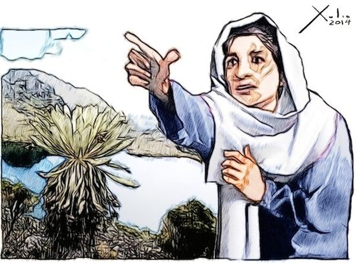

Símbolo de la Resistencia y el Dolor Andino

En las cumbres más elevadas del estado Mérida, emerge la figura de Luz Caraballo. Este personaje es la personificación de la tragedia que azotó a los pueblos andinos durante el siglo XIX.
Durante el desarrollo de la Campaña Admirable en 1813, el reclutamiento forzoso desmembró a la familia de Luz. La narrativa oral sostiene que sus cinco hijos partieron y jamás regresaron, detonando en ella una psicosis errante.
"Tu hija está en un cerrito,
tu hijo está en un saladillo,
y el otro en un vergelito,
y el otro en un espejismo,
y el otro en un infinito..."
El poeta Andrés Eloy Blanco utilizó la estructura de una canción de cuna para suavizar la crudeza de la muerte. El conteo constante ("uno, dos, tres, cuatro, cinco") funciona como un mantra de esperanza ante la pérdida.
| Evento / Sitio | Descripción Detallada |
|---|---|
| La Toma | Caserío donde vivió la familia Caraballo. |
| Campaña Admirable | Paso de Bolívar que detonó la tragedia familiar. |
| Monumento (1967) | Institucionalización de la leyenda en Apartaderos. |